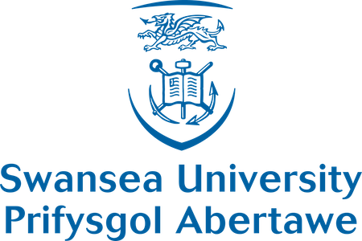

| Sponsors |
|
|
Eurographics Association - Eurographics is the only truly Europe-wide professional Computer Graphics
association. |
|  |
Swansea University - Founded in 1920, Swansea University is a research-led institution with an
excellent
reputation for the quality of its student experience. |
|
EPSRC - The Engineering and Physical Sciences Research Council is a British Research Council that
provides government funding for grants to undertake research and postgraduate degrees in engineering and the
physical sciences. |
|
|